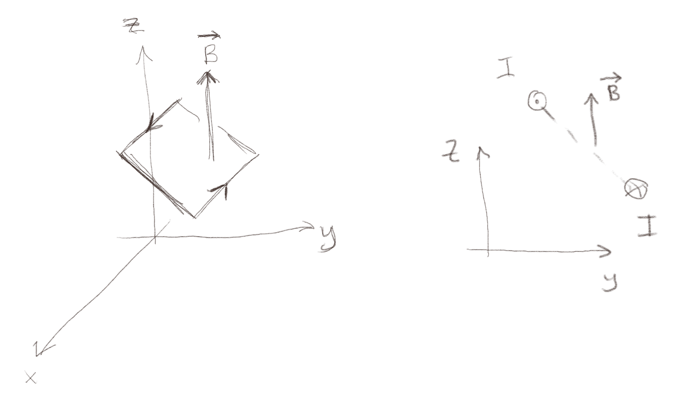
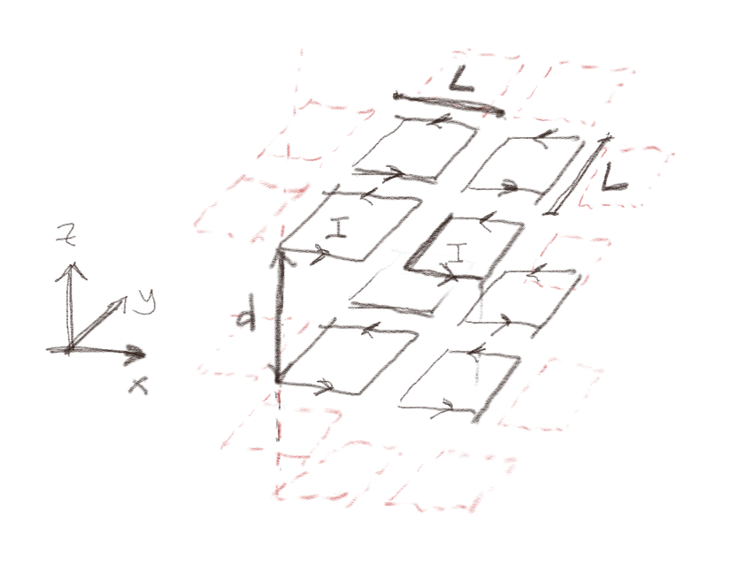
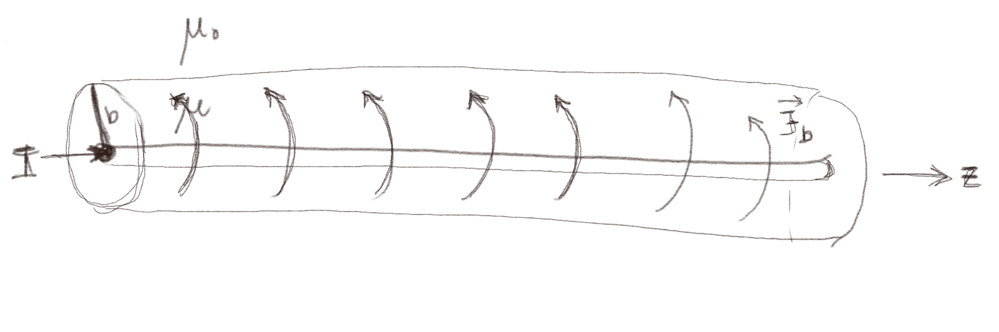
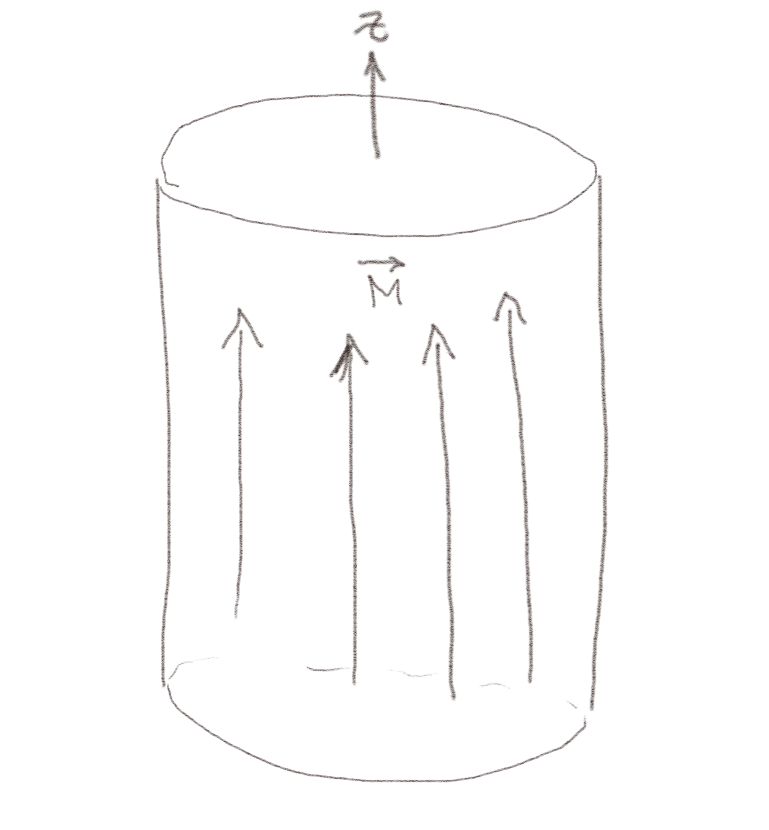
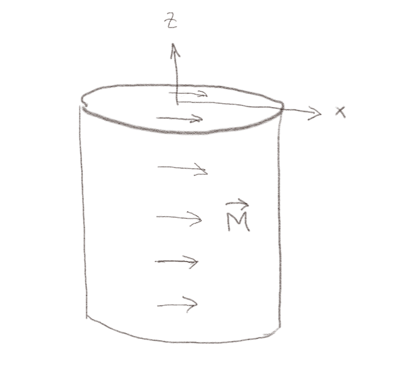
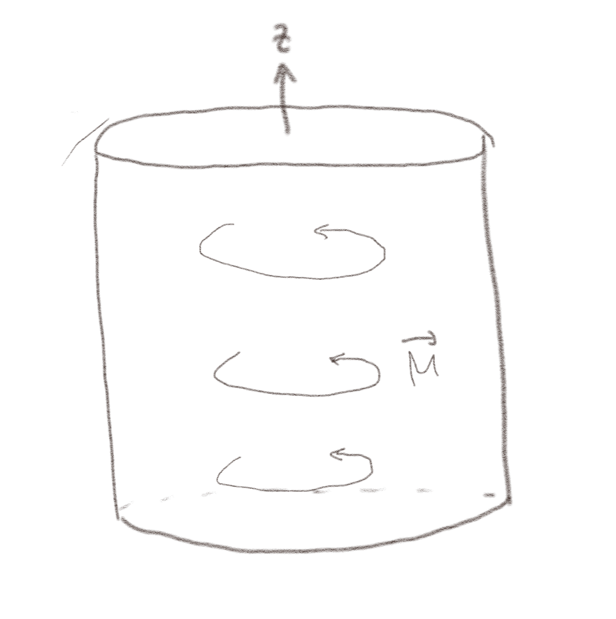
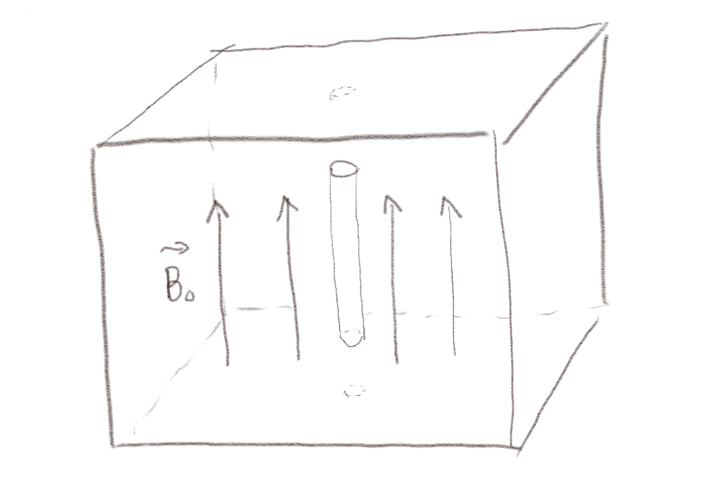
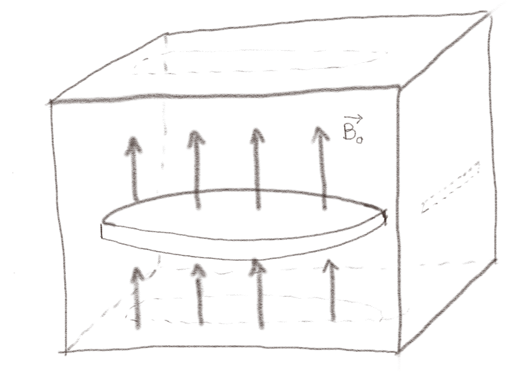

(Lærebok 12.1.1)
Figuren viser en krets med en strøm \( I \) i et konstant, homogent magnetfelt \( \vec{B} = B_z \z \) som vist i figuren.

a) Hvilken retning har kraftmomentet på kretsen?
i \( x \)-retningen.
Kretsen har et magnetisk moment \( \vec{m} = I \vec{S} \) hvor \( \vec{S} = S \nhat \) og \( \nhat \) peker i retning av den positive flatenormalen. Flatenormalen \( \nhat \) peker i dette tilfellet omtrent i retningen \( \nhat = (\y + \z)/\sqrt{2} \). Kraftmomentet er \( \tau = \vec{m} \times \vec{B} \). Vi finner retningen ved høyrehåndsregelen, hvor \( \nhat \times \vec{B} \) vil peke ut av planet, dvs i \( x \)-retningen. Kraftmomentet vil derfor virke slik at \( \nhat \) blir opplinjert med \( \vec{B} \).
Figuren viser 8 kretser (i sort) som ligger inne i et større systemet av små strømsløyfer. I hver krets går den en konstant strøm \( I \).

a) Hva blir magnetiseringen \( \vec{M} \) til dette systemet?
\( \vec{M} = I/d \z \)
Magnetiseringen er summen av de magnetiske momentene delt på volumet. Vi setter her volumet til \( V = (2L)^2 (2d) \), hvor vi tenker oss at volume som er assosiert med kretsene går halvveis til de neste kretsene rundt. (Men det kan også argumenteres for at volumet er \( (2L)^2 d \)). Hver enkelt krets har magnetisk moment \( \vec{m} = I L^2 \z \). Det totale magnetiske momentet er derfor $$ \begin{equation} \sum \vec{m}_i = 8 \vec{m} = 8 I L^2 \z \; , \tag{19} \end{equation} $$ og magnetiseringen er da $$ \begin{equation} \vec{M} = \frac{1}{v}\sum_i \vec{m}_i = \frac{1}{8L^2d}8 I L^2 \z = I/d \z \tag{20} \end{equation} $$ Merk igjen at volumet \( v \) ikke nødvendigvis er veldefinert. Siden de 8 ligger inne blant andre kretser, kan det være rimelig å si at volumet som tilhører kretsene strekker seg halvveis til de neste og derfor har en total høyde på \( 2d \). Men det kunne også vært mulig å definere volumet slik at det har en høyde \( d \). Etterhvert som det blir mange magnetiske moment inne i volumet, vil dette kun bli en diskretiseringsfeil.
(Lærebok 12.1.3)
Anta at magnetiseringen i et område er \( \vec{M} = M_0 \z \).
a) Hva er da den bundne strømmen gjennom en sirkel med radius \( a \) som ligger med sentrum i origo i \( xy \)-planet?
0
Vi finner den bundne strømmen fra $$ \begin{equation} I_{C,b} = \int_C \vec{M} \cdot \d \vec{l} \tag{21} \end{equation} $$ Men fordi denne kretsen ligger i \( xy \)-planet og \( \vec{M} \) peker i \( z \)-regningen vil \( \vec{M}\cdot \d \vec{l} = 0 \) og dermed er \( I_{C,b} = 0 \).
Figuren viser en uendelig lang tynn, rett leder med radius \( a \) som fører en strøm \( I \) inne i en magnetiserbar sylinder med radius \( b \) og permeabilitet \( \mu \). Utenfor er det vakum.

a) Hvordan er \( \vec{H} \) relatert til \( \vec{B} \) inne i sylinderen og utenfor sylinderen?
Vi vet at \( \vec{B} = \mu\vec{H} \) inne i sylinderen og \( \vec{B} = \mu_0 \vec{H} \) utenfor sylinderen.
b) Forklar hvorfor \( \vec{H} = H_{\phi}(r)\phihat \)
Vi ser fra forrige oppgave at \( \vec{H} \) og \( \vec{B} \) er proporsjonale med hverandre og derfor vil ha samme symmetrier. Vi kan derfor diskutere symmetrien til \( \vec{B} \) og overføre denne til \( \vec{H} \). Det er lurt, fordi vi har en intuisjon for \( \vec{B} \), vi kan knytte magnetfeltet til Biot-Savarts lov og vi kan bruke at divergensen til \( \vec{B} \) er null.
Vi bruker sylinderkoordinater fordi systemet har rotasjonsgeometri om \( z \)-aksen. Siden systemet er uendelig langt, vil systemet se likt ut i \( z \)-retningen fra alle \( z \)-posisjoner. Derfor kan ikke \( \vec{B} \) (eller \( \vec{H} \)) avhenge av \( z \). Tilsvarende vil systemet være identisk hvis det roteres om \( z \)-aksen. Derfor kan ikke \( \vec{B} \) (eller \( \vec{H} \)) avhenge av \( \phi \). Vi har derfor at $$ \begin{equation} \vec{B} = B_r(r) \rhat + B_{\phi}(r) \phihat + B_z(r) \z \; . \tag{22} \end{equation} $$ Vi kan bruke Biot-savarts lov til å se at siden alle strømelementene peker i \( z \)-retningen, og \( \vec{B} \)-feltet er normalt på strømelementene, kan ikke \( \vec{B} \) han noen komponent i \( z \)-retningen.
Vi kan så bruke at divergensen til \( \vec{B} \)-feltet er null til å argumentere for at \( B_r = 0 \). Dette har vi gjort flere ganger før, og vi ser det ved å velge en sylindrisk Gauss flate, hvor fluksen gjennom endeflatene er null og fluksen gjennom sylinderflaten må være null og derfor må \( B_r \) være null.
Vi har derfor funnet ut at \( \vec{B} = B_{\phi}(r) \phihat \) og derfor at \( \vec{H} = H_{\phi}(r) \phihat \). Argumentet her er veldig omstendelig. Etterhvert som du blir vant til å se symmetrier kan du skrive den rett ned uten store argumenter.
c) Hvordan vil du velge Ampere-løkker for å finne \( \vec{H} \)-feltet inne i sylinderen og utenfor sylinderen.
Vi vil velge løkker hvor \( \vec{B} \cdot \d \vec{l} \) er konstant langs hele løkken. Da må vi velge en løkke med samme symmetri som systemet, for eksempel en sirkel i \( xy \)-planet med sentrum i lederen.
d) Hva blir \( \vec{H} \)-feltet? \( \vec{H} = \frac{I}{2 \pi r} \phihat \)
Vi finner \( \vec{H} \)-feltet fra Amperes lov: $$ \begin{equation} \oint_C \vec{H} \cdot \d \vec{l} = \oint_C H_{\phi} \phihat \cdot r \d \phi \phihat = 2 \pi r H_{\phi} = I \tag{23} \end{equation} $$ som gir at \( H_{\phi} = I/(2 \pi r) \). Dette uttrykket er det samme både for \( r < b \) og for \( r > b \).
e) Hva blir \( \vec{B} \)-feltet?
\( \vec{B} = \frac{I \mu}{2 \pi r} \) når \( r < b \), \( \vec{B} = \frac{I \mu_0}{2 \pi r} \) når \( r > b \).
Vi finner da \( \vec{B} = \mu\vec{H} \), slik at \( \vec{B} = \mu\frac{I}{2 \pi r} \) når \( r < b \) og \( \vec{B} = \mu_0\frac{I}{2 \pi r} \) når \( r > b \).
Det er et magnetfelt \( \vec{B}_0 = B_0(I) \z \) inne i en sylindrisk solenoide med en strøm \( I \) når det er vakuum inne i solenoiden. Så fyller vi det sylindriske indre i solenoiden med et lineært, magnetiserbart materiale med permeabilitet \( \mu \).
a) Hva er \( \vec{H}_0 \) i området før det magnetiserbare materialet plasseres inn?
Vi finner at \( \vec{H}_0 = \vec{B}_0/\mu_0 = B_0/\mu_0 \z \).
b) Hva er \( \vec{H} \) i området etter at det magnetiserbare materialet plasseres inn?
Vi vet at \( \vec{H} \) bestemmes av de frie strømmene, dvs strømmen \( I \), som ikke endres når det magnetiserbare materialet plasseres inn. Derfor er \( \vec{H} = \vec{H}_0 \).
c) Hva er blir magnetiseringen \( \vec{M} \) inne i solenoiden.
Magnetiseringen er proporsjonal med \( \vec{H} \) inne i solenoiden, slik at \( \vec{M} = \chi_m \vec{H} = \chi_m B_0/\mu_0 \z \).
d) Hva blir det magnetiske feltet \( \vec{B} \) inne i solenoiden?
Vi kan finne det magnetiske feltet på to vis: (1) Det magnetiske feltet er gitt som $$ \begin{equation} \vec{B} = \mu \vec{H} = \mu_0 (1 + \chi_m) \vec{H} = \frac{\mu_0(1 + \chi_m) B_0}{\mu_0} \z = (1 + \chi_m) B_0 \z$ \; . \tag{24} \end{equation} $$ eller (2) Det magnetiske feltet er gitt som \( \vec{B} = \mu_0 ( \vec{H} + \vec{M}) \) som gir $$ \begin{equation} \vec{B} = \mu_0 \left( \frac{B_0}{\mu_0}\z + \frac{\chi_m B_0}{\mu_0} \z \right) = B_0(1 + \chi_m) \z \; . \tag{25} \end{equation} $$
(Lærebok 12.1.8)
(Lærebok 12.1.9)
a) En sylinder laget av et magnetiserbart materiale har en uniform magnetisering \( \vec{M} \) i \( z \)-retningen som vist i figuren.

Hvor i/på sylinderen er de bundne strømmene? Hvor store er i så fall strømtettheten og hvilken retning har den?
D
Den bundne volumstrømtettheten er \( \vec{J}_b = \nabla \times \vec{M} \). Fordi \( \vec{M} = M_0 \z \) er uniform vil curl være null. Det er derfor ingen bunden volumstrømtetthet.
Den bundne overflatestrømtettheten er \( \vec{J}_{b,s} = \vec{M} \times \nhat \). For topp- og bunn-flaten er \( \nhat \) parallel med \( \vec{M} \). Det er derfor ikke noen bunden strømtetthet her. På sylindersiden er \( \nhat = \rhat \) slik at \( \vec{J}_{b,s} = M_0 \z \times \rhat = M_0 \phihat \). Riktig svar er derfor (D).
b) En sylinder laget av et magnetiserbart materiale har en uniform magnetisering \( \vec{M} \) i \( x \)-retningen som vist i figuren.

Hvor i/på sylinderen er de bundne strømmene? Finn strømtettheten der hvor den er forskjellige fra null.
D
Den bundne volumstrømtettheten er \( \vec{J}_b = \nabla \times \vec{M} \). Fordi \( \vec{M} = M_0 \x \) er uniform vil curl være null. Det er derfor ingen bunden volumstrømtetthet.
Den bundne overflatestrømtettheten er \( \vec{J}_{b,s} = \vec{M} \times \nhat \).
For topp- og bunn-flaten er \( \nhat = \pm \z \) slik at \( \vec{J}_{b,s} = M_0 \x \times \pm \z = - M_0 \pm \y \).
For den runde sylindersiden er \( \nhat = \rhat = \x \cos \phi + \y \sin \phi \) slik at \( \vec{J}_{b,s} = M_0 \x \times \rhat = M_0 \x \times (\x \cos \phi + \y \sin \phi) = M_0 \sin \phi \z \). Denne er forskjellig fra null bortsett fra når \( \phi = 0 \) og \( \pi \).
Riktig svar er derfor (D).
c) En sylinder laget av et magnetiserbart materiale har en uniform magnetisering \( \vec{M} \) i \( \phi \)-retningen som vist i figuren.

I hvilken retning går overflatestrømmen på den runde sylinder-siden?
C
Her er vi ikke spurt om strømtettheten i volumet. Den vil ikke være null, men ha en \( z \)-komponent. Du kan sjekke dette ved å se på curl i sylinder-koordinater.
Overflatestrømtettheten er gitt som \( \vec{J}_{b,s} = \vec{M} \times \nhat \). På den runde sylinder-siden er \( \nhat = \rhat \) og derfor er \( \vec{J}_{b,s} = M_0 \phihat \times \rhat = -M_0 \z \).
Riktig svar er derfor (C).
(Lærebok 12.2)
Figuren viser et paramagnetisk materiale (\( \chi_m > 0 \)) med et uniform magnetisk felt \( \vec{B}_0 \). Det er derfor også et uniform \( \vec{H} \)-felt: \( \vec{H}_0 = \vec{B}_0/\mu \). Vi kutter ut et tynt og langt sylindrisk hull.

a) Hva er \( \vec{M} \) i midten av dette hullet?
Hvor kan man ha magnetisering?
0
Det er ikke noe magnetisk materiale i hullet, det er derfor ikke noen magnetisering her.
b) Hva er \( B = |\vec{B}| \) i midten av hullet?
Hva er \( \vec{H} \) inne i hullet sammenliknet med i det magnetiske materialet?
C
Vi ser at \( \vec{H} \) feltet kun har en tangentiell komponent nær den runde siden til hullet. Fra grensebetingelsene for \( \vec{H} \)-feltet vet vi at \( H_{1,t} - H_{2,t} = J_s \). Hvor \( J_s \) er den frie overflatestrømtettheten. Men det er ingen frie strømmer på grenseflaten mellom det magnetiske materialet og hullet. Derfor er tangential-komponenten av \( H \) den samme umiddelbart innenfor hullet og umiddelbart inne i det magnetiske materialet. Vi antar at sylinderen er smal, slik at \( H \) i midten av hullet er omtrent den samme som ved overflaten. Det betyr at \( \vec{H} \) inne i hullet er den samme som inne i det magnetiske materialet.
Inne i hullet er da \( \vec{B} = \vec{\mu_0} \vec{H} = \vec{\mu_0} \vec{B_0}/\mu = (\mu_0/\mu) \vec{B}_0 \). Magnetfeltet er derfor mindre inne i hullet enn inne i det magnetiske materialet fordi \( \mu > \mu_0 \) for et paramagnetisk materiale. (Dette ville vært annerledes for et diamagnetisk materiale). Det virker rimelig, siden det magnetiske materialet er paramagnetisk med \( \chi_m > 0 \), noe som forsterker magnetfeltet.
Figuren viser et paramagnetisk materiale (\( \chi_m > 0 \)) med et uniform magnetisk felt \( \vec{B}_0 \). Det er derfor også et uniform \( \vec{H} \)-felt: \( \vec{H}_0 = \vec{B}_0/\mu \). Vi kutter ut et bredt og tynt sylindrisk hull.

c) Hva er \( \vec{B} \) i midten av dette hullet?
Hvilken grensebetingelse bør du her bruke?
\( \vec{B} = \vec{B}_0 \)
Magnetfeltet midt inne i hullet vil være omtrent det samme som langs de flate sidene av sylinderen, siden sylinderen er tynn og det er svært kort avstand fra midten til topp og bunn-flaten.
Umiddelbart utenfor sylinderen er magnetfeltet normalt på topp- og bunn-flaten. Grensebetingelsen for feltet normalt på en grenseflate er at \( B_{1,n} = B_{2,n} \), slik at magnetfeltet er likt på innsiden og utsiden av flaten. Magnetfeltet er derfor det samme midt inne i hullet som utenfor. (Merk at det kan være litt forskjellig når sidene i sylinderen, men disse er langt unna midten av hullet).